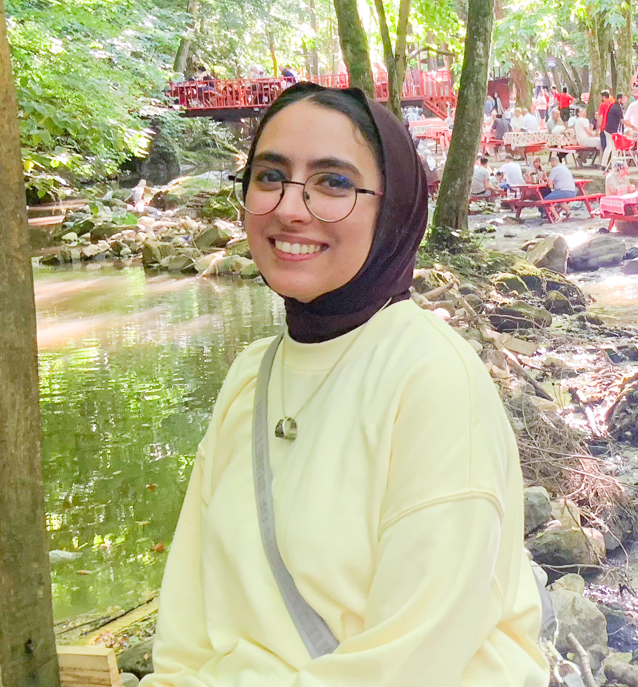
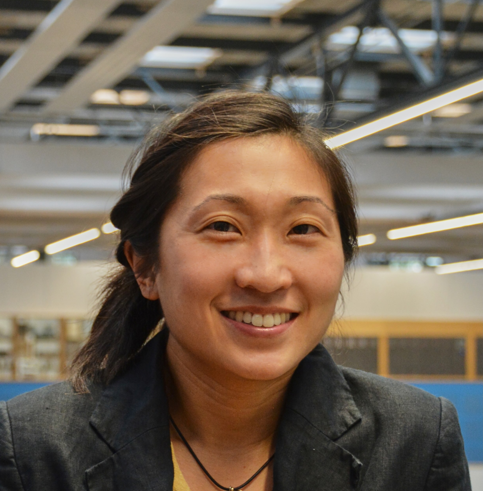
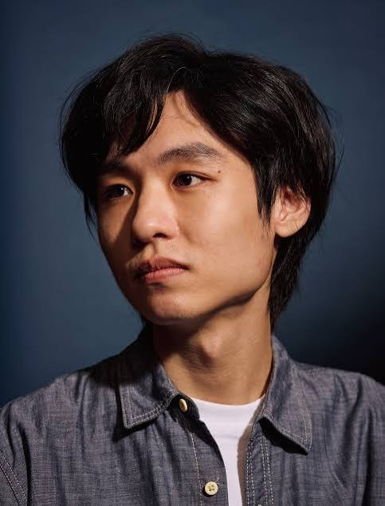

About the Workshop
In this workshop, we bring together HCI researchers and industry practitioners interested in exploring the intersection of AI and maker culture, with a particular focus on skill augmentation and the evolving nature of expertise within maker communities. Our workshop will feature:
- (1) Talks from invited speakers sharing perspectives on AI-augmented tools and systems developed for the maker community.
- (2) Group Brainstorming Sessions where participants collaboratively identify opportunities and challenges across four maker skill domains.
- (3) Panel Discussions where participants and speakers synthesize findings and reflect on how to implement AI augmentation in our field while preserving the values of community-driven craft cultures.
Our intended audience includes researchers, tool builders, and practitioners working across fabrication, HCI, AI, craft, and community-centered design.
Dimensions of Making
As maker culture is inherently interdisciplinary, we center our workshop around four broad skill categories:
Physical Crafting
Procedural and tool-specific competencies acquired through practice and repetition.
Design Thinking
Creative thinking skills like brainstorming and subjective aesthetic judgment of form, character, and visual placement of components in space.
Cognition & Analysis
Understanding underlying physical/mathematical reasoning (dimensioning, material selection, structure, CAD/simulation) alongside reflective self-evaluation and iteration.
Ethics & Inclusivity
Social and ethical dimensions including empathetic design, accessibility, sustainability, and accountability for social and environmental impacts.
Organizers

Marwa AlAlawi
MIT CSAIL
Ticha Sethapakdi
MIT CSAIL
Dishita Turakhia
Emory University

Katherine Song
Delft University of Technology
Ilan Moyer
MIT

Liang He
University of Texas at Dallas

Lvmin Zhang
Stanford University
Ruofei Du
Google XR

Stefanie Mueller
MIT CSAIL
Workshop Schedule
As a half-day workshop (~3 hours), participants will be working in groups of 5–6 organized around four maker-skill categories. Sessions are structured around two topics: building AI-augmented tools for maker-specific skills, and preserving alignment with the values of the traditional maker community.
Ice-breaker
Interactive activity to introduces participants to one another and sorts them into groups.
Invited Talks
Invited speakers share their work and perspectives on making and AI.
Group Session 1A — Topic 1
Groups rotate through two of four thematic tables, brainstorming opportunities and challenges in building AI-augmented tools for maker-specific skills, building on ideas left by prior groups.
Group Session 1B — Topic 1
Groups rotate through the remaining two tables, same format. Followed by a 10-minute break.
Panel Discussion 1 — Topic 1
Participants reconvene to contribute what emerged from the group sessions and observations from their tables.
Group Session 2 — Topic 2
Groups return to their tables to brainstorm preserving alignment between AI-augmented making and the core values of the maker community.
Panel Discussion 2 — Topic 2
Speakers and participants synthesize the key themes, tensions, and opportunities that emerged across both topics.
Closing Remarks & Actionables
Organizers summarize key takeaways, propose open research questions, and outline next steps — collaborations, publications, or community initiatives.
Join us at UIST 2026
We welcome all researchers and practitioners across HCI, AI, fabrication, and maker communities.